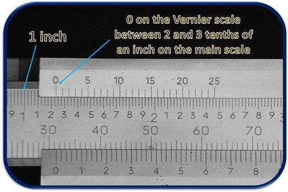

Jangka Sorong
Salah satu alat ukur yang banyak digunakan pada ranah enginering adalah jangka sorong, alat ukur ini tidak lebih dari sebuah penggaris namun didesain khusus agar dapat mengukur secara akurat dengan ketelitian tinggi.
Pengertian Jangka Sorong
Jangka sorong (vernier caliper) adalah alat ukur teknik yang bisa digunakan untuk mengukur tiga jenis pengukuran sekaligus dalam satu alat menggunakan metode geser. Alat ini memiliki fungsi yang sama dengan mikrometer namun mikrometer menggunakan prinsip ulir sementara jangka sorong menggunakan metode geser. Oleh sebab itu banyak yang menyebutnya mistar geser.
Kegunaan Jangka Sorong
- Ketebalan plat atau diameter sebuah poros
- Celah atau diameter dalam sebuh poros
- Coakan atau permukaan yang lebih dalam dari permukaan lain pada satu komponen
Fungsi-fungsi diatas memang sama seperti fungsi yang dimiliki oleh mikrometer. Namun, mikrometer tidak dapat melakukan tiga pengukuran diatas dalam satu alat sekaligus. Setidaknya perlu tiga jenis mikrometer untuk mengukur tiga jenis pengukuran diatas.
Namun pada jangka sorong, tiga jenis pengukuran diatas bisa dilakukan hanya pada satu alat. Inilah yang menjadi kelebihan dari jangka sorong.
Ketelitian Jangka Sorong
Jangka sorong memiliki ketelitian cukup tinggi, umumnya jangka sorong yang banyak dipakai memiliki ketelitian 0,05 mm dan 0,02 mm.
Memang jangka sorong berbeda dengan mikrometer, kalau mikrometer memiliki ketelitian yang pasti yakni 0,01 mm namun pada jangka sorong ada tiga jenis ketelitian yakni 0,05 mm, 0,02 mm, dan 0,01 mm.
- Jangka sorong ketelitian 0,05 mm
- Jangka sorong ketelitian 0,02 mm
Artinya, skala terkecil pada nonius scale itu mempunyai nilai 0,05 mm. dengan kata lain tiap garis pada nonius scale itu memiliki nilai 0,05 mm.

Artinya, skala terkecil pada nonius scale mempunyai nilai 0,02 mm. ini artinya tiap garis pada nonius scale mempunyai nilai 0,02 mm.
Bagian – Bagian Jangka Sorong dan Fungsinya
- Jaw, merupakan dua buah bilah panjang yang dipakai untuk mengukur ketebalan atau diameter luar.
- Knife, merupakan bilai kecil yang terletak dibagian atas jangka sorong untuk mengukur celah atau diameter dalam.
- Depth rod, merupakan batang kecil yang digunakan untuk mengukur kedalaman suatu permukaan.
- Main scale, merupakan skala yang terletak disepanjang mistar tetap. Fungsinya untuk menunjukan hasil pengukuran, umumnya satuan yang dipakai adalah mm dan cm namun pada imperial vernier caliper menggunakan satun inch.
- Nonius scale, merupakan skala yang terletak pada mistar geser. Fungsinya untuk menunjukan hasil desimal dari suatu pengukuran
- Drag metric, atau mistar geser berfungsi untuk menggeser jaw, knife, depth rod, dan nonius scale.
- Thumb screw, berfungsi sebagai tumpuan tangan untuk menggeser drag metric. Penempatan thumb screw ini akan membawa grip yang baik meski kita hanya menggeser metric menggunakan satu jari.
- Lock screw, berfungsi untuk mengunci satu set drag metric. Saat pengunci ini diaktifkan maka drag metric tidak akan bergeser dan kita bisa membaca hasil pengukuran lebih akurat.
Jenis-Jenis Jangka Sorong
Berdasarkan ketelitiannya sudah kita bahas ada tiga jenis mikrometer. Namun berdasarkan satuan dan penggunaannya masih ada beberapa jenis jangka sorong antara lain ;
-
Metric Vernier Caliper
Jenis metric vernier caliper menggunakan skala dengan satuan metric (mm atau cm). Di Indonesia, jenis metric vernier caliper ini yang paling banyak digunakan karena satuan untuk menunjukan dimensi masih mengunakan satuan metric.

-
Dial Vernier Caliper (Analog)
Jangka sorong yang dilengkapi jarum penunjuk. Jarum penunjuk berguna sebagai skala nonius, sehingga memudahkan operator melihat hasil pengukuran. Dibandingkan dengan jangka sorong biasa, pembacaan ukuran alat ini lebih mudah. Karena tidak perlu melihat garis mana yang paling berimpit. Sebelum melakukan pengukuran, operator harus tahu tingkat ketelitiannya. Untuk mendapatkan hasil pengukuran, operator cukup melihat ukuran pada skala utama dan ukuran selebihnya bisa dilihat pada jarum penunjuk.
- Digital Vernier Caliper Jenis ini sudah menggunakan panel digital untuk menunjukan hasil pengukuran, jadi kita hanya perlu menggeser mistar dan hasil pengukuran akan muncul pada layar. Untuk ketelitiannya biasanya mencapai 0,01 mm.
-
Imperial Vernier Caliper
Tipe ini menggunakan skala dengan satuan inch, meski jarang ditemui namun di Eropa penggunaan imperial caliper ini lebih banyak ditemui. Sementara cara membacanya, masih sama persis.

Cara Membaca jangka Sorong
Coba perhatikan gambar mengenai hasil pengukuran di atas. Cara membaca jangka sorong agar dapat melihat hasil pengukuran akan dibutuhkan dua langkah pembacaan:
-
Membaca skala utama
Lihat gambar di atas, 31 mm atau 3,1 cm (garis merah) merupakan angka yang paling dekat dengan garis nol pada skala vernier, persis terletak di sebelah kanan. Jadi, skala utama yang terukur adalah 31mm atau 3,1 cm. -
Membaca skala vernier / nonius
Perhatikan gambar di atas, terdapat satu garis skala utama yang bertemu dengan satu garis pada skala vernier membentuk satu garis lurus. Pada gambar di atas, garis lurus tersebut merupakan angka 3 pada skala vernier. Jadi, skala vernier yang terukur adalah 0,3 mm atau 0,03 cm. - Hasil pengukuran akhir
Untuk mendapatkan hasil pengukuran akhir, tambahkan kedua nilai pengukuran di atas. Sehingga hasil pengukuran sebesar 31 mm + 0,3 mm = 31,3 mm atau 3,13 cm.
Hal yang harus diperhatikan saat menggunakan Jangka Sorong
Untuk mendapatkan hasil presisi, saat kita menggunakan jangka sorong, ada beberapa hal yang perlu diperhatikan, apa saja?
- Pastikan benda yang akan diukur benar-benar terjepit oleh rahang. Jadi jangan hanya di permukaan saja. Dengan begitu, skala yang ditunjukkan oleh hasil pengukuran tepat.
- Pastikan posisi angka nol dari skala ukur, dan lihat apa itu sejajar dengan muka rahang.
- Tidak membaca hasil pengukuran saat alat belum dikunci. Ini karena hal tersebut bisa mengakibatkan ketidaktepatan hasil pengukuran karena skala akan bergerak.
- Saat mengukur benda yang mudah berubah bentuk oleh tekanan, katakan saja ketebalan kayu, upayakan untuk tidak menekan rahang ukur terlalu kuat agar kayu tidak sampai rusak.